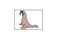

What is Resolution?
The data in the image you have scanned is a collection of dots carrying information about brightness and color. The density of these dots is called "resolution", and resolution will determine the amount of detail your image contains. The unit of resolution is dots per inch (dpi). Dpi is the number of dots per inch (2.5 cm).
The higher the resolution (value), the more detail in your image; the lower the resolution (value), the less detail.
Setting the Resolution in MP Navigator EX
In MP Navigator EX, you can specify the resolution with Scanning Resolution in the Scan Settings dialog.
Images for Display on a Monitor
Paper/photographs to be viewed on a display should be scanned at 150 dpi, which is close to ordinary monitor resolution.
Images for Printing
Images to be printed should be scanned at a resolution that corresponds to the resolution of the printer.
For example, if you want to print using a 600 dpi black and white printer, you should set the resolution to 600 dpi.
With a color printer, specifying the resolution at half the resolution of the printer should be fine. For example, if you want to print scanned paper/photos using a 600 dpi color printer, you should set the resolution to 300 dpi. However, with a high-resolution printer, printing takes longer than usual if you set the resolution to half the resolution of the printer.
Example of Appropriate Resolution when Printing to Scale
If you print a document at twice the size both vertically and horizontally, the resolution of the document will be reduced by half. If the resolution of the original document is 300 dpi, the resolution of the enlarged document will be 150 dpi. If you print the document with a 600 dpi color printer, the lack of detail in the image may be obvious. In that case, if you scan at the Scanning Resolution of 600 dpi, the resolution will be 300 dpi even if you double the size of document and you can print the document with sufficient quality. Conversely, if you print a document at half scale, it should be sufficient to scan at half the resolution.
When Printing Color Photos at Twice the Size
|  | ||
Document resolution: 300 dpi Scanning resolution: 600 dpi Scale: 200% |
Print at twice the size Scanning resolution/actual scanning resolution: 600 dpi |
Printing resolution: 300 dpi |
Setting the Resolution in ScanGear (Scanner Driver)
In ScanGear, you can specify the resolution with Output Resolution in Output Settings on the Advanced Mode tab.
Example of Appropriate Resolution when Printing to Scale
The scanning resolution is automatically set so that the value set in Output Resolution will be the resolution of the scanned image. If you set Output Resolution to 300 dpi and scan at twice the size, the document will be automatically scanned at 600 dpi, and the resolution of the scanned image will be 300 dpi. You can print the document with sufficient quality using a 600 dpi color printer.
When Printing L Size (3.5 inches x 5 inches) (89 mm x 127 mm) Photos at Twice the Size
Document resolution: 300 dpi Output resolution: 300 dpi Scale: 200% |
Scan at twice the size Actual scanning resolution: 600 dpi |
Image resolution/printing resolution: 300 dpi |
Appropriate Resolution Settings
Set the resolution according to the use of the scanned image.
 Note
Note-
Although you can change Output Resolution in ScanGear, it is recommended that you scan at the default value.
For displaying on a monitor: 150 dpi
For printing: 300 dpi
When Output Size is set to Flexible in ScanGear's Advanced Mode tab (Select Source is Platen and the scale is 100%)
| Document | Use | Color Mode | Output Resolution |
|---|---|---|---|
| Color photo | Copying (Printing) |
Color | 300 dpi |
| Creating a postcard | Color | 300 dpi | |
| Saving to a computer | Color | 75 dpi - 300 dpi | |
| Using on a website or attaching to e-mail | Color | 75 dpi - 150 dpi | |
| Black and white photo | Saving to a computer | Grayscale | 75 dpi - 300 dpi |
| Using on a website or attaching to e-mail | Grayscale | 75 dpi - 150 dpi | |
| Text document | Copying | Color, Grayscale, or Black and White | 300 dpi |
| Attaching to e-mail | Color, Grayscale, or Black and White | 150 dpi | |
| Scanning text using OCR | Color or Grayscale | 300 dpi - 400 dpi |
 Important
Important-
If you double the resolution, the file size quadruples. If the file is too large, the processing speed will slow down significantly, and you will experience inconvenience such as lack of memory. Set the minimum required resolution according to the use of the image.